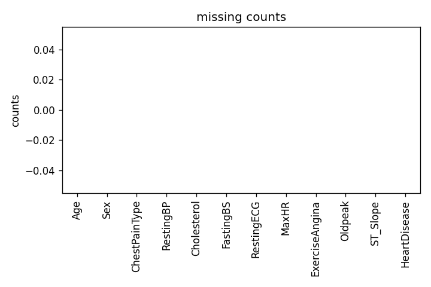
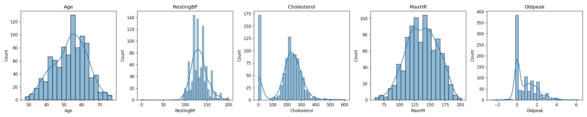
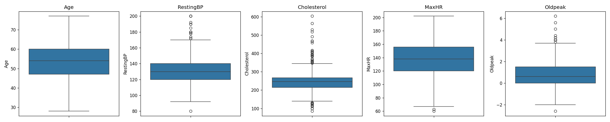
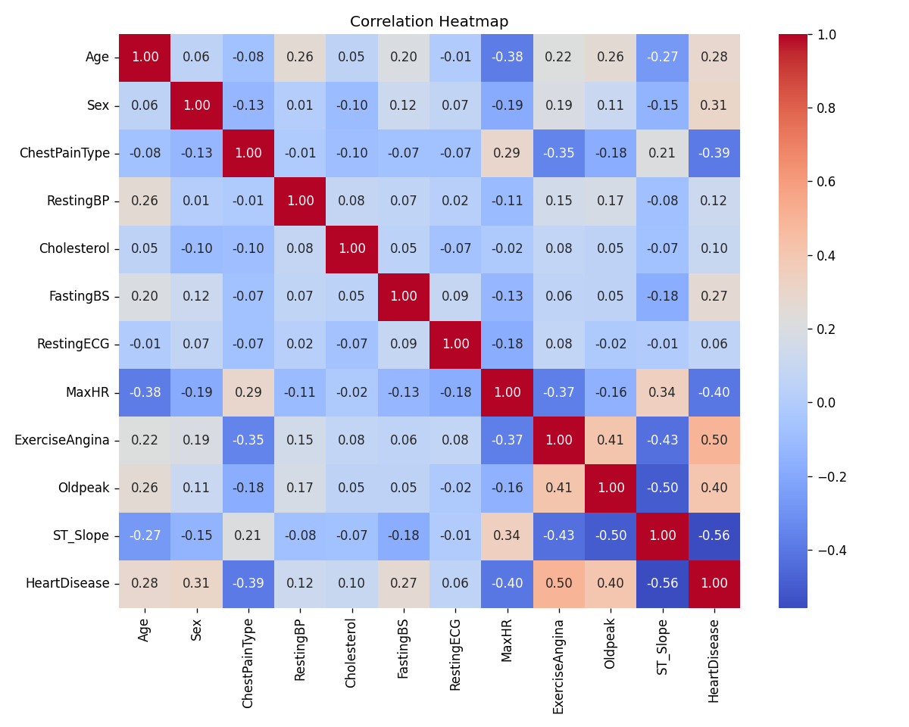
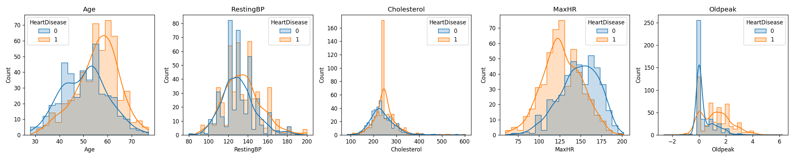
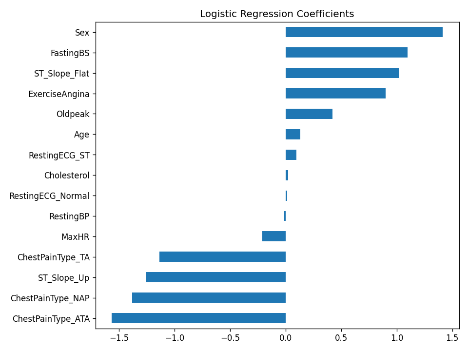
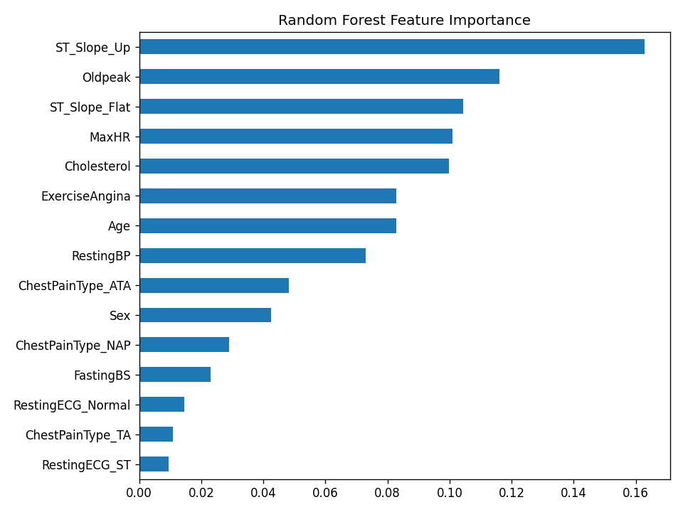
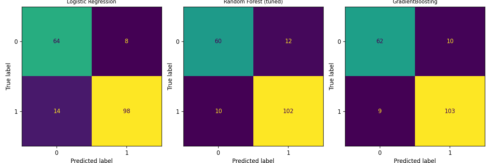
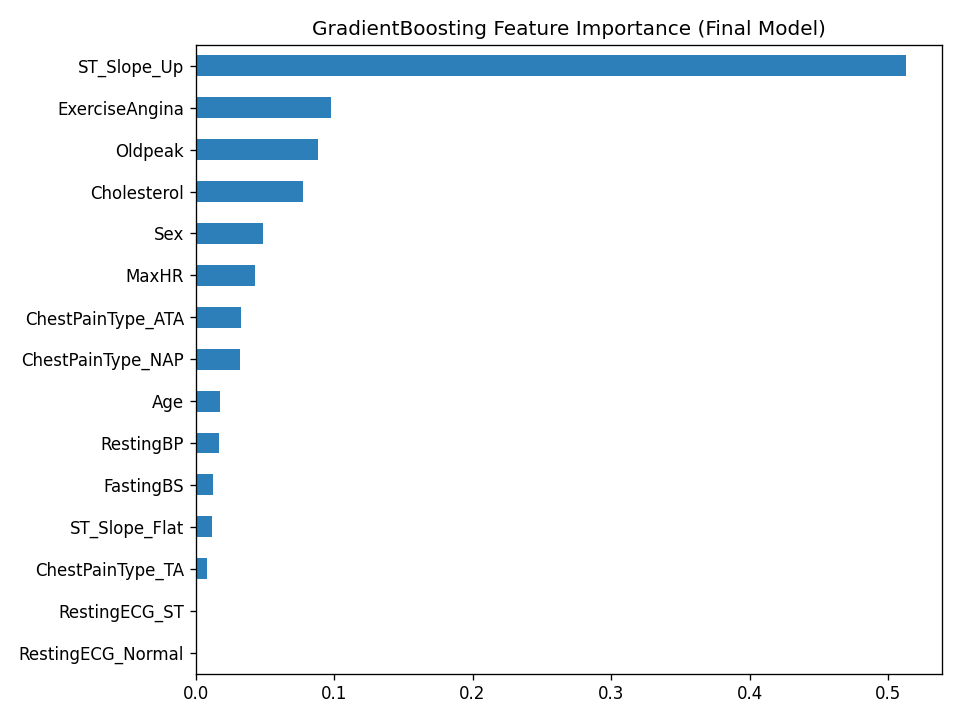
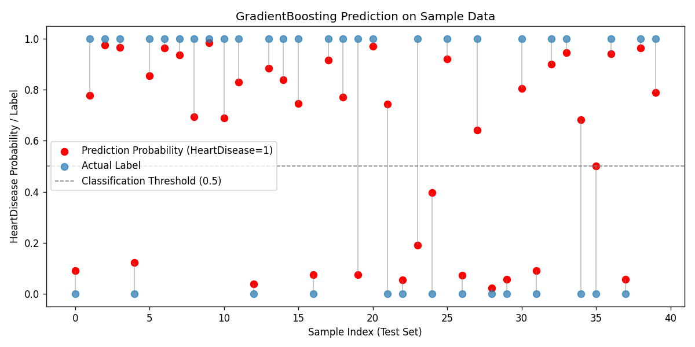

| 과제명 | 임상 데이터를 통한 심장질환 발생 예측 |
|---|---|
| 담당자 | 고무서 |
사업과제 : 임상 데이터를 이용한 심장질환 발생 여부 예측 및 위험 변수 도출
📋 순서
| 과제구분 | 내용 |
|---|---|
| AI | 임상 검진 데이터를 이용하여 심장질환 발생 여부 예측 |
| 데이터 전처리, 표준화, 상관관계 분석(EDA 도구 활용) | |
| 분류모델 선정 및 학습 | |
| Accuracy, ROC-AUC 등 평가지표를 활용한 모델 성능 평가 | |
| 변수 중요도 및 회귀 계수를 통한 위험 요인 해석 | |
| 테스트 |
1) 구축 대상 선정 기준
2) AI 예측 분석모델 적용 대상
| 구분 | 수집 데이터 | 예측모델인자(독립변수) | AI예측 분석 대상 |
|---|---|---|---|
| 심장질환 발생 예측 |
- 임상 검진 데이터(918건) |
- 나이, 성별 - 흉통 유형(ChestPainType) - 안정시 혈압(RestingBP) - 콜레스테롤(Cholesterol) - 공복혈당(FastingBS) - 안정시 심전도(RestingECG) - 최대심박수(MaxHR) - 운동유발 협심증(ExerciseAngina) - ST 분절 하강(Oldpeak), ST 기울기 |
임상 검진 데이터를 통한 심장질환 발생 여부 예측 |
3) AI 분석모델 구축 프로세스
DATA IMPORTING(임상 데이터 수집) → 데이터 전처리(결측치·이상치 처리, 인코딩, 스케일링) → 모델링(로지스틱회귀, 랜덤포레스트, 부스팅 계열 비교 및 최적화) → 예측(질환 발생 확률 산출) → USER INSIGHT(위험 변수 해석 및 선별 기준 제시)
가. 데이터 출처
나. 데이터 개요
총 918건의 임상 검진 레코드를 이용하며, 1건당 1명의 환자에 대한 단일 시점 검진 결과를 담고 있다.
| 구분 | 성분 | 설명 |
|---|---|---|
| 기본정보 | Age | 나이 |
| Sex | 성별 (M/F) | |
| 혈압/콜레스테롤 | RestingBP | 안정시 혈압 (단위: mmHg) |
| Cholesterol | 혈청 콜레스테롤 (단위: mg/dl) | |
| 혈당 | FastingBS | 공복혈당 120mg/dl 초과 여부 (1=초과, 0=이하) |
| 검진소견 | ChestPainType | 흉통 유형 (TA, ATA, NAP, ASY) |
| RestingECG | 안정시 심전도 결과 (Normal, ST, LVH) | |
| MaxHR | 운동 중 최대심박수 | |
| 운동검사 | ExerciseAngina | 운동유발 협심증 여부 (Y/N) |
| Oldpeak | ST 분절 하강 정도 | |
| 기울기 | ST_Slope | ST 분절 기울기 (Up, Flat, Down) |
| 타깃 | HeartDisease | 심장질환 발생 여부 (1=발생, 0=정상) |
가. 탐색적 데이터 분석 및 처리
○ 데이터셋 구성
918건의 단일 테이블 데이터로, 결측치는 명목상 존재하지 않으나 RestingBP, Cholesterol 항목에 비정상적인 0 값이 결측치 대용으로 입력되어 있는 문제가 확인되었다.

○ 0값 처리 전 주요 변수별 분포

Cholesterol 히스토그램에서 0 근처에 비정상적으로 튀는 막대가 확인되며, 이는 해당 값들이 실제 측정값이 아닌 결측치 대용으로 입력되었음을 시각적으로 보여준다.
RestingBP가 0인 행은 1건으로 정상적인 측정값일 수 없으므로 해당 행은 삭제 처리했다. Cholesterol이 0인 행은 172건(전체의 약 19%)으로 다수를 차지하여 단순 삭제 시 정보 손실이 크다고 판단, HeartDisease(타깃) 그룹별 중앙값으로 대체(imputation)했다. 대체 후 전체 평균 콜레스테롤은 244.57mg/dl이다.
○ 중복행 확인
중복 레코드는 0건으로 확인되어 추가 처리는 진행하지 않았다.
○ 이상치 확인 (IQR 기준)

| 변수 | 이상치 개수 | 정상 범위 |
|---|---|---|
| Age | 0개 | 27.5 ~ 79.5 |
| RestingBP | 27개 | 90.0 ~ 170.0 |
| Cholesterol | 41개 | 134.5 ~ 346.5 |
| MaxHR | 2개 | 66.0 ~ 210.0 |
| Oldpeak | 16개 | -2.2 ~ 3.8 |
임상 검진값 특성상 정상범위를 벗어난 값도 실제 환자의 병리적 소견(고혈압, 고콜레스테롤 등)일 가능성이 높아, 별도 제거 없이 모델 학습에 그대로 활용했다.
○ 다중공선성 분석

위 상관관계 분석 결과, 변수 간 상관계수가 0.9를 초과하는 다중공선성 문제는 발견되지 않았다. ST_Slope, ExerciseAngina, Oldpeak 등이 타깃(HeartDisease)과 비교적 높은 상관관계를 보였다.
○ 주요 변수별 분포 (타깃 대비)

MaxHR(최대심박수)은 질환군에서 낮은 값으로 치우친 분포를 보이고, Oldpeak(ST 분절 하강)은 질환군에서 더 높은 값으로 치우친 분포를 보인다. 두 변수가 질환 여부와 유의미한 관계를 가짐을 시각적으로 확인할 수 있다.
○ 스케일러 비교 (Logistic Regression 기준)
| 스케일러 | Accuracy | ROC-AUC |
|---|---|---|
| MinMaxScaler | 0.8750 | 0.9218 |
| StandardScaler | 0.8804 | 0.9204 |
| RobustScaler | 0.8804 | 0.9204 |
ROC-AUC 기준으로는 MinMaxScaler가 근소하게 가장 높고, Accuracy 기준으로는 StandardScaler·RobustScaler가 근소하게 더 높다. 세 스케일러 간 성능 차이는 0.001~0.002 수준으로 실질적인 차이는 없는 것으로 판단되며, 이는 본 데이터셋에 극단적인 이상치가 적어 RobustScaler의 이상치 강건성이 두드러지게 작용하지 않았기 때문으로 해석된다. 이후 모델 비교 및 최종 모델 선정에는 일반적으로 가장 널리 쓰이는 StandardScaler 적용본을 기준으로 사용했다.
가. 모델 비교 및 선정
| 모델 | Accuracy | ROC-AUC |
|---|---|---|
| Logistic Regression | 0.8804 | 0.9204 |
| Random Forest (tuned) | 0.8804 | 0.9294 |
| XGBoost (tuned) | 0.8859 | 0.9466 |
| GradientBoosting (tuned) | 0.8967 | 0.9456 |
| LightGBM (tuned) | 0.8750 | 0.9470 |
○ 모델 선정 결론
5개 모델(로지스틱회귀, 랜덤포레스트, GradientBoosting, XGBoost, LightGBM) 중 부스팅 계열 3종은 모두 GridSearchCV(5-fold, scoring=roc_auc)로 하이퍼파라미터를 튜닝했다. ROC-AUC만 보면 LightGBM(0.947)·XGBoost(0.947)·GradientBoosting(0.946)이 0.001~0.0014 차이로 사실상 동급이었다. 본 과제는 정밀검사(관상동맥 조영술 등)의 과잉 시행과 위험 신호 누락을 동시에 줄이는 것이 목적이므로, 임계값 0.5 기준 실제 분류 성능(Accuracy, 클래스별 Recall/Precision)을 우선 기준으로 재검토했다. GradientBoosting이 Accuracy 89.7%로 가장 높고, 질환(class=1) Recall 0.92(누락 최소화)와 정상(class=0) Recall 0.86(과잉검사 최소화)의 균형이 가장 우수해 최종 모델로 채택했다. 해석 가능성을 위한 베이스라인으로는 로지스틱회귀를 함께 비교 대상으로 유지했다.
- 로지스틱회귀 베이스라인

ST_Slope_Up(ST 기울기 상승), Sex(성별) 등이 음의 방향으로, ChestPainType_ATA, Oldpeak 등이 양의 방향으로 질환 발생 가능성에 영향을 미치는 것으로 나타났다. 해석은 직관적이나 ROC-AUC 0.9204로 트리 계열보다 다소 낮은 성능을 보였다.
- 랜덤포레스트 (성능용)
복잡한 비선형 패턴 학습에 강점이 있는 랜덤포레스트 분류 모델을 적용했다. 기본 모델 ROC-AUC는 0.9294였으며, GridSearchCV를 통한 하이퍼파라미터 최적화를 진행했다.
| 하이퍼파라미터 | 탐색 값 |
|---|---|
| 트리 개수(n_estimators) | 100, 200, 400 |
| 최대 깊이(max_depth) | 4, 8, 12, None |
| 최대 성분(max_features) | sqrt, log2 |
※ 빨강색으로 표시된 값이 GridSearchCV(5-fold, scoring=roc_auc)를 통해 선정된 최적 하이퍼파라미터이다 (n_estimators=100, max_depth=None, max_features='sqrt'). 최적화 후 ROC-AUC는 0.9294로 기본 모델과 동일했다.

- Boosting 계열 모델 (GradientBoosting / XGBoost / LightGBM)
트리 기반 부스팅 계열 3종을 추가로 비교했으며, 랜덤포레스트와 동일하게 GridSearchCV(5-fold, scoring=roc_auc)로 각 모델의 하이퍼파라미터를 튜닝했다. ROC-AUC는 LightGBM 0.9470, XGBoost 0.9466, GradientBoosting 0.9456으로 0.0014 이내의 근소한 차이였다. 반면 Accuracy 기준으로는 GradientBoosting(learning_rate=0.1, max_depth=2, n_estimators=100)이 89.7%로 가장 높았고, LightGBM은 87.5%로 랜덤포레스트(88.0%)보다도 낮았다. ROC-AUC는 모든 임계값을 종합한 구분 능력이고 Accuracy는 실제 운영 임계값(0.5)에서의 분류 성능이라는 점에서 차이가 발생했으며, 본 과제의 실무 목적(정밀검사 남용·위험 신호 누락 동시 최소화)에는 0.5 임계값 기준 성능이 더 중요하다고 판단해 GradientBoosting을 최종 모델로 선정했다.
가. 모델 비교 - Confusion Matrix

로지스틱회귀·랜덤포레스트·최종 모델인 GradientBoosting 3종만 비교했다. GradientBoosting은 세 모델 중 Accuracy(89.7%)가 가장 높고, 질환(class=1) Recall 0.92와 정상(class=0) Recall 0.86으로 두 클래스 모두에서 가장 균형 잡힌 분류 성능을 보였다.
나. 최종 모델(GradientBoosting) 최적 하이퍼파라미터
| 하이퍼파라미터 | 탐색 값 |
|---|---|
| 트리 개수(n_estimators) | 100, 200, 400 |
| 학습률(learning_rate) | 0.01, 0.05, 0.1 |
| 최대 깊이(max_depth) | 2, 3, 4 |
※ 빨강색으로 표시된 값이 GridSearchCV(5-fold, scoring=roc_auc)를 통해 선정된 최적 하이퍼파라미터이다 (n_estimators=100, learning_rate=0.1, max_depth=2). 최적화 후 ROC-AUC는 0.9456, Accuracy는 0.8967을 기록했다.
다. 최종 모델(GradientBoosting) 변수 중요도

로지스틱회귀·랜덤포레스트와 마찬가지로 ST_Slope, ExerciseAngina, Oldpeak 등 운동부하검사 관련 지표가 GradientBoosting의 분류 결정에도 핵심적인 영향을 미치는 것으로 확인됐다.
라. 샘플 데이터를 통한 예측 결과

테스트셋 샘플 40건을 추출해 실제 라벨(점)과 모델이 예측한 HeartDisease 확률(선)을 함께 표시했다. 대부분의 샘플에서 예측 확률이 0.5 임계값을 기준으로 실제 라벨과 같은 방향에 위치해, 모델이 양성/음성 구분 경향을 잘 따라가고 있음을 확인할 수 있다.
○ 임상 검진 데이터
- 데이터 샘플 상단부
| Age | Sex | ChestPainType | RestingBP | Cholesterol | FastingBS | RestingECG | MaxHR | ExerciseAngina | Oldpeak | ST_Slope | HeartDisease |
|---|---|---|---|---|---|---|---|---|---|---|---|
| 40 | M | ATA | 140 | 289 | 0 | Normal | 172 | N | 0.0 | Up | 0 |
| 49 | F | NAP | 160 | 180 | 0 | Normal | 156 | N | 1.0 | Flat | 1 |
| 37 | M | ATA | 130 | 283 | 0 | ST | 98 | N | 0.0 | Up | 0 |
| 48 | F | ASY | 138 | 214 | 0 | Normal | 108 | Y | 1.5 | Flat | 1 |
| 54 | M | NAP | 150 | 195 | 0 | Normal | 122 | N | 0.0 | Up | 0 |
- 기본 통계 요약 (전체 918건)
| 구분 | Age | RestingBP | Cholesterol | MaxHR | Oldpeak |
|---|---|---|---|---|---|
| 평균 | 53.51 | 132.40 | 198.80 | 136.81 | 0.89 |
| 표준편차 | 9.43 | 18.51 | 109.38 | 25.46 | 1.07 |
| 최소 | 28 | 0 | 0 | 60 | -2.6 |
| 최대 | 77 | 200 | 603 | 202 | 6.2 |
- 주요 변수 통계 및 분포도
가. 모델 개발 결과 요약
로지스틱회귀, 랜덤포레스트, GradientBoosting, XGBoost, LightGBM 5개 모델을 시도했으며, 부스팅 계열 3종은 모두 GridSearchCV로 하이퍼파라미터를 튜닝했다. ROC-AUC만 보면 LightGBM(0.947)·XGBoost(0.947)·GradientBoosting(0.946)이 0.0014 이내로 거의 동일했다. 본 과제의 목적이 정밀검사 남용과 위험 신호 누락을 동시에 줄이는 것이므로, 실제 운영 임계값(0.5)에서의 분류 성능을 기준으로 재검토한 결과 GradientBoosting이 Accuracy 89.7%, 질환 Recall 0.92·정상 Recall 0.86으로 누락 방지와 과잉검사 방지의 균형이 가장 우수해 최종 모델로 채택했다. ST_Slope, ExerciseAngina, Oldpeak, MaxHR 등 운동부하검사 관련 지표가 질환 발생 예측에 큰 기여를 하는 것으로 확인되었으며, 해석용 베이스라인인 로지스틱회귀 계수 분석을 통해 각 변수의 영향 방향을 함께 제시했다.
나. 실무 적용 방안
건강검진 단계에서 본 모델을 적용하면, 정밀검사(관상동맥 조영술 등) 이전 단계에서 고위험군을 효율적으로 선별할 수 있어 검진 자원의 우선순위를 조정하는 데 활용될 수 있을 것으로 기대된다.
다. 한계점 및 개선 방향